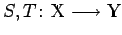

Inhalt Index DeskTop Bronstein

 Funktionalanalysis Stetige lineare Operatoren und Funktionale Beschränktheit, Norm und Stetigkeit linearer Operatoren
Funktionalanalysis Stetige lineare Operatoren und Funktionale Beschränktheit, Norm und Stetigkeit linearer Operatoren


Für zwei lineare (stetige) Operatoren  sind die Summe S+T und das Vielfache punktweise erklärt:
| (12.136) |
Die Menge  , häufig auch mit bezeichnet, aller linearen stetigen Operatoren T aus
, häufig auch mit bezeichnet, aller linearen stetigen Operatoren T aus  in
in  wird so ein Vektorraum, auf dem sich
wird so ein Vektorraum, auf dem sich  (12.131) als Norm erweist. Dadurch wird ein normierter Raum und, falls
(12.131) als Norm erweist. Dadurch wird ein normierter Raum und, falls  ein BANACH-Raum ist, sogar ein BANACH-Raum. Insbesondere sind also die Axiome bis
ein BANACH-Raum ist, sogar ein BANACH-Raum. Insbesondere sind also die Axiome bis  und bis erfüllt.
und bis erfüllt.
Ist , dann kann man für zwei beliebige Elemente durch
das Produkt definieren, das den Axiomen bis aus normierte Algebren sowie der Verträglichkeitsbedingung (12.100) mit der Norm genügt und so zu einer (im allgemeinen nichtkommutativen) normierten und, falls  BANACH-Raum ist, zu einer BANACH-Algebra macht. Damit sind für jeden Operator die Potenzen
BANACH-Raum ist, zu einer BANACH-Algebra macht. Damit sind für jeden Operator die Potenzen
definiert, wobei I der identische Operator ist. Es gilt
und außerdem existiert stets der (endliche) Grenzwert
der Spektralradius des Operators T heißt und den Beziehungen
genügt, wobei T* der zu T adjungierte Operator ist (s. auch (12.175)).
Im Falle der Vollständigkeit von hat der Operator  für die Darstellung in Form der NEUMANNschen Reihe
für die Darstellung in Form der NEUMANNschen Reihe
die für in der Operatornorm von konvergiert.
(S. auch Konvergenz der NEUMANNschen Reihe).